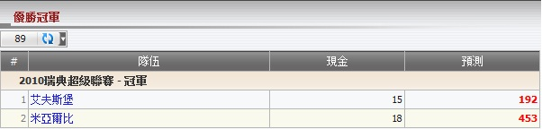

優勝冠軍
定義:
顯示現金為總代理基於佔成數的輸贏, 及顯示預測為總代理對於每個投注可能的輸額若會員贏了該投注。

圖 1.1
- 從上圖中，讓我們選取聯賽 2010年瑞典超級聯賽 - 冠軍作為例子以理解這份報告。
- 總代理基於佔成數對於艾夫斯堡和米亞爾比可能會贏得的總現金 = 15 + 18 = 33.
- 1 艾夫斯堡: 會員投注額 = 50, 賠率 = 15, 總代理佔成是30％。
--> 現金 = 投注額 * 總代理佔成 = 50 * 30% = 15
--> 預測 = 總現金 - 本金 * 賠率 * 總代理佔成 = 33 - 50 * 15 * 30% = -192
這意味著總代理將會輸 192.
- 2 米亞爾比: 會員投注額 = 60, 賠率 = 27, 總代理佔成是30%。
--> 現金 = 投注額 * 總代理佔成 = 60 * 30%= 18
--> 预测 = 总现金 - 本金 * 赔率 * 总代理占成 = 33 - 60 * 27 * 30% = -453
這意味著總代理將會輸 453.